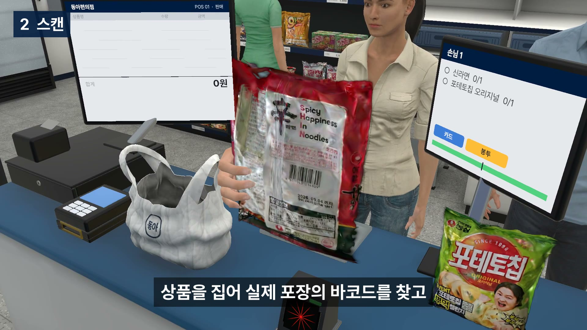
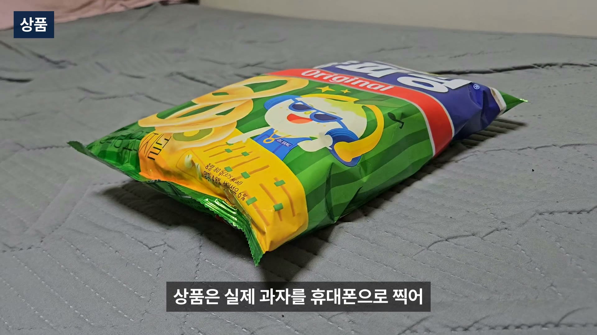
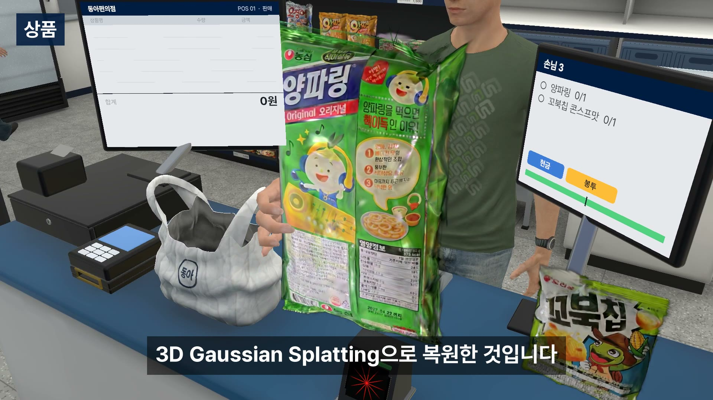
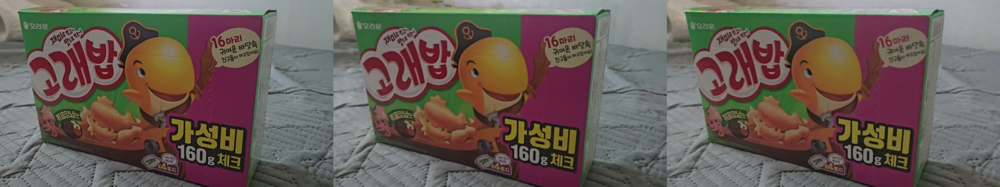
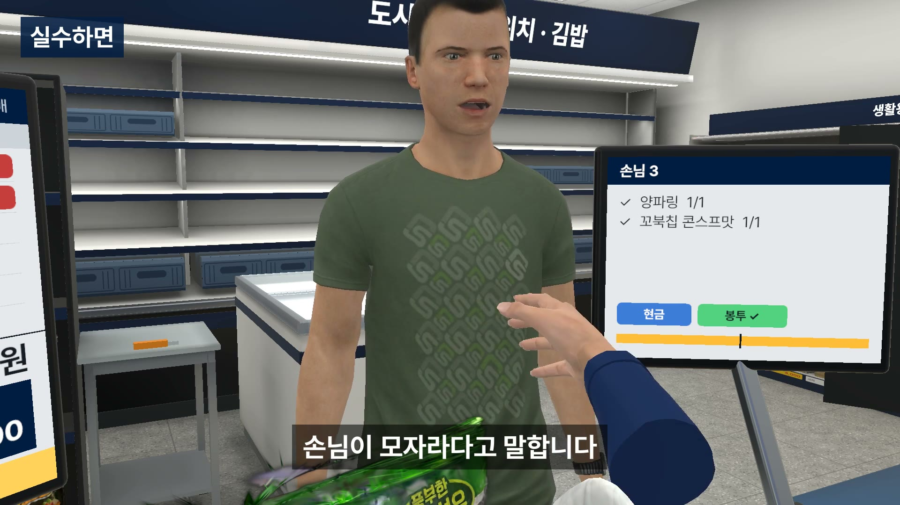
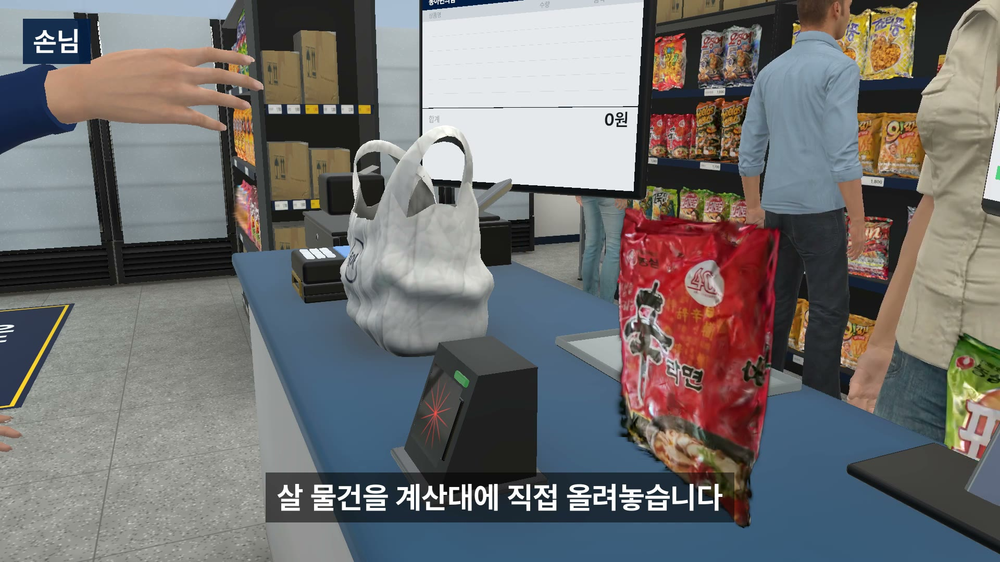
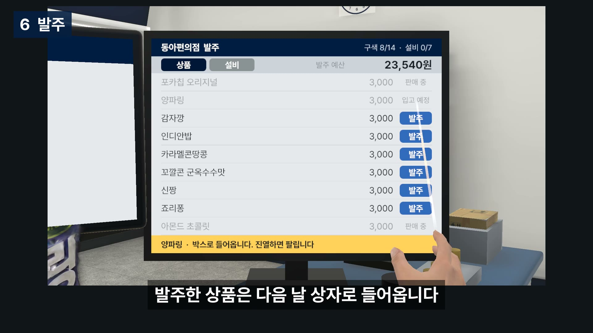

가상현실 TERM PROJECT · 2026.11.17
동아편의점
실제 상품을 3D Gaussian Splatting으로 옮긴
VR 편의점
팀 도민 · 권도훈 · 이민건

무엇을 만들었나
실제 과자를 휴대폰으로 찍어 3DGS로 만들고,
VR 편의점에서 손으로 집어 계산한다
23개
3DGS 상품 모델
약 72fps
Quest 2 (Link) 실측
100%
직접 촬영한 실제 상품

게임 화면: 실제 포장의 바코드를 찾아 스캐너에 댄다
시연 영상 · 57초
출근 → 계산 → 모자란 거스름돈 → 발주 → 입고·진열
제작 과정
과자 한 봉지가 게임에 들어오기까지
01
휴대폰 촬영
앞면·뒷면 영상
02
3DGS 학습
splatfacto · 약 8~10분
03
배경 제거
상품만 남기기
04
경량본 만들기
멀리서 볼 가벼운 복사본
05
진열대에 병합
칸마다 하나로

휴대폰으로 찍은 실물

게임 속 3DGS 상품
상품 한 개 = 네 겹
3DGS에는 표면도 충돌도 없다. 그래서 "돌려서 바코드를 찾는 것"이 게임 규칙이 됐다.
NeRF · 3DGS 비교
왜 NeRF가 아니라 3DGS인가
| 항목 (고래밥 / 치토스) | 3DGS | NeRF |
|---|---|---|
| PSNR ↑ | 30.31 / 30.09 | 27.22 / 26.18 |
| SSIM ↑ | 0.925 / 0.928 | 0.888 / 0.903 |
| 1080p 렌더 속도 | 약 31 fps | 약 0.3 fps |
| 학습 시간 | 7.9 / 9.7분 | 30.0 / 22.3분 |
약 90배
3DGS가 빠르다. 화질도 앞선다
1/240
NeRF 0.3fps는 VR 72fps의 240분의 1
실제 사진
3DGS
NeRF

같은 사진·같은 카메라 포즈 · 상품 2종 · RTX 4070 · 속도는 nerfstudio 안에서 잰 값(VR 프레임 아님)
성능
VR 72fps를 지킨 방법
렌더러는 개발이 멈춘 프로젝트이고 Quest 2는 지원 목록에 없었다. 그래서 측정부터 했다.
01 · 먼저 쟀다
6~7ms
Gaussian 100만 개당 드는 시간
02 · 안 보이는 것을 건너뛰었다
82% → 절반
등 뒤 상품도 눈앞 상품의 82% 비용. 시야 컬링을 넣어 GPU 시간 절반
03 · 진열대를 합쳤다
144.7만 → 72.5만
칸마다 하나로 병합, 집는 순간만 분리
04 · 헤드셋에서 확인
71.8fps
Quest 2 Link · 8분 동안 빠진 프레임 5개 · GPU 평균 6ms
01~02는 PC 모의 스테레오 측정(RTX 4070) · 03은 Gaussian 수(멀리서는 32.0만) · 04는 2026-11-15 Quest 2 실측(72Hz, 진열대를 채운 지금 빌드)
게임
게임으로 만든 것

틀릴 수 있는 계산
거스름돈을 POS가 세어 주지 않는다. 더 주면 시재 손실, 덜 주면 손님이 말한다.

손으로 주고받는 손님
상품을 계산대에 놓고, 카드와 지폐를 접시에 놓고, 봉투를 들고 나간다.

발주로 커지는 매장
번 돈으로 상품과 설비를 들이고, 다음 날 상자로 오면 직접 진열한다.
다듬기
직접 해 보고 고친 것
| 헤드셋으로 해 보니 | 이렇게 고쳤다 | |
|---|---|---|
| 지폐가 접시 속에 묻혀 안 보였다 | → | 접시를 단단하게 만들어 위에 놓이게 |
| 손님이 손을 번쩍 들며 인사했다 | → | 실제 손님처럼 감사 인사만 하고 나간다 |
| "오래 걸리네요"가 너무 빨리 나왔다 | → | 시간이 30% 남았을 때로 늦췄다 |
| 계산대 가운데 큰 스캐너가 손을 가렸다 | → | 작은 스캐너를 오른손 앞으로 옮겼다 |
고칠 때마다 게임을 처음부터 끝까지 하는 자동 검사(1일차 335항목 등)를 돌렸다.
한계
못 한 것과 한계
체험자 설문을 하지 못했다
실재감과 멀미를 다른 사람에게 재지 못했다.
비교는 상품 2종뿐
페트병·캔 같은 반사 재질은 촬영하지 못했다.
전자레인지·온수에 맞는 상품이 없다
도시락·컵라면이 없어 과자와 봉지라면에 붙였다.
상품 추가에는 사람 손이 든다
촬영과 크기 재기는 자동화하지 못했다.
THANK YOU
진짜 상품을
손에.
데모 세션에서 헤드셋으로 직접 해 보실 수 있습니다
질문 · 팀 도민 · 권도훈 · 이민건